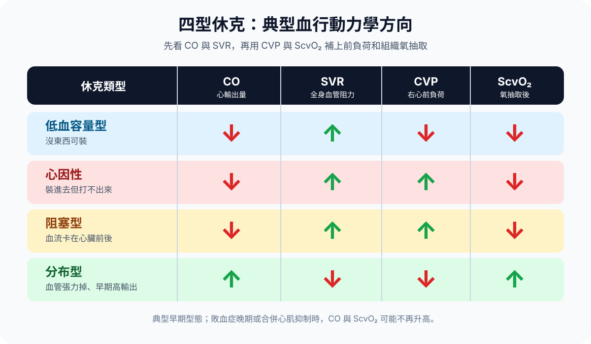
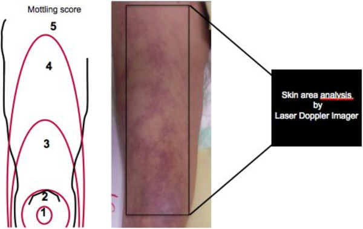

疾病 一般內科
Shock ｜ 休克 · Circulatory shock 筆記更新 2026-07-27· 整理狀態：可用
加入閱讀清單 其他名稱 4 Shock · 休克 · 循環休克 · Circulatory shock
一句話總覽
休克不是「血壓低」，是循環衰竭導致組織氧輸送不足以支應代謝需求 的狀態。四型的差別只在氧輸送鏈上斷在哪一環——沒血、泵不動、被卡住、管子鬆掉 ——而認出型別就等於知道第一線該做什麼。血壓正常不能排除休克 。
30 秒行動卡
診斷關鍵 ：低血壓 ＋ 任何一項灌流不足（意識改變、尿量 < 0.5 mL/kg/hr、微血管回填 > 3 秒、膝蓋花斑）＝ 休克。分型靠兩個床邊動作：摸末梢溫冷 、看頸靜脈脹塌 ，再用床邊超音波確認。
治療骨架 ：氣道與氧合 → 兩條大管徑靜脈 → 平衡晶體液（心因性與未止血的出血例外）→ norepinephrine 撐住 mean arterial pressure (MAP) ≥ 65 mmHg → 同一時間找可逆病因 （感染源、缺血、出血點、阻塞）。
絕對不可 ：obstructive shock 只調升壓藥而不解除阻塞；未止血就狂灌晶體液；右心室梗塞／填塞／張力性氣胸給 nitrate 或利尿劑；急性心因性休克給 β-blocker。
定義與定位
項目
重點
本質
氧輸送 oxygen delivery (DO₂) 不足以支應氧消耗 oxygen consumption (VO₂) → 細胞轉為無氧代謝 → lactate 上升、器官衰竭
不是什麼 不是「收縮壓 < 90」 。低血壓是休克常見的伴隨現象，不是定義的一部分
分類位置
四型：distributive（分布型）／cardiogenic（心因型）／hypovolemic（低血容型）／obstructive（阻塞型） 。臨床上混合型很常見
最常見的一型
Distributive ——其中又以敗血性休克為大宗
死得最快的一型
Obstructive ——但也是最有機會在幾分鐘內被一個機械性動作逆轉 的（其他能秒逆轉的還有：心律不整 → 電擊；外出血 → 壓迫／止血帶）
血壓正常不等於沒有休克
血壓 ≈ cardiac output (CO) × systemic vascular resistance (SVR) ，任一項掉下來另一項可以代償撐回正常——血壓是最後才崩的指標，不是最早的 。
Compensated shock ：心輸出量已經掉了，靠頻脈與血管收縮把血壓撐在 120/80，但末梢已冷、尿量已少、脈壓已窄（年輕人、孕婦、慢性高血壓者 最容易被騙——他平常 160，掉到 110 已經是休克）。Cryptic shock ：血壓正常但 lactate 已升高 。
所以低血壓不能當篩檢工具，灌流指標才是 ；反過來也成立——慢性低血壓而沒有灌流不足，就不是休克。
病因與機制
flowchart TD
A["氧輸送不足<br/>或組織用不了氧"] --> B["細胞轉為無氧代謝"]
B --> C["ATP 不足<br/>細胞膜幫浦失效"]
B --> D["lactate 上升"]
C --> E["細胞水腫與凋亡"]
E --> F["微循環與內皮受損"]
F --> G["毛細血管滲漏<br/>血管張力下降"]
G --> A
E --> H["多重器官衰竭"]
classDef key fill:#263238,stroke:#000,color:#fff,font-weight:bold
class H key
筆記中的流程與關係 一條公式推出四型
DO₂ ＝ CO × 動脈血含氧量 ；CO ＝ 心搏量 × 心率 ，心搏量取決於前負荷、收縮力、後負荷 。斷在哪一環就是哪一型：前負荷不夠 → hypovolemic ；前負荷進不去、血打不出去 → obstructive ；收縮力不夠 → cardiogenic ；血管張力崩掉又漏 → distributive 。
容易被整組忘掉的是公式的另一半 ：動脈血含氧量掉下來（嚴重 Anemia 、一氧化碳中毒）同樣造成氧輸送不足；細胞拿到氧卻用不了（敗血症的粒線體失能、cyanide 中毒）叫 cytopathic ——這種病人的 ScvO₂ 會是高的 。
型別
代表病因
Distributive 敗血症 （Sepsis↗ ，最大宗）、anaphylaxis、neurogenic（脊髓損傷、高位硬脊膜外麻醉）、adrenal crisis、肝衰竭、藥物與毒物
Cardiogenic 大面積心肌梗塞（ACS ，尤其前壁）、右心室梗塞 、猛爆性心肌炎、末期 Heart failure 、嚴重瓣膜病變、心梗機械併發症（乳突肌斷裂、中膈破裂、游離壁破裂）、心律不整（Ventricular tachycardia 、心室率極快的 Atrial fibrillation ）、β-blocker／CCB 中毒
Hypovolemic 出血 （外傷、消化道、主動脈瘤破裂、產科、術後）；非出血性流失（嘔吐腹瀉、燒燙傷、DKA、嚴重 Hypercalcemia 造成的多尿、第三腔積液）
Obstructive Tension pneumothorax、cardiac tamponade、massive pulmonary embolism、auto-PEEP 四個；少見：嚴重主動脈瓣狹窄、HCM 的流出道阻塞、心房黏液瘤
四型血行動力學對照
欄位縮寫：CO 心輸出量、SVR 全身血管阻力、CVP central venous pressure（右心前負荷）、PCWP pulmonary capillary wedge pressure（左心前負荷）、ScvO₂ central venous oxygen saturation（正常約 70%）。
型別
代表病因
CO
SVR
前負荷 CVP／PCWP
ScvO₂
末梢
第一線處置
Distributive 敗血症、anaphylaxis、neurogenic
↑ 或正常 ↓↓ ↓ 或正常
↑ 或正常 溫、紅、脈壓寬 輸液 ＋ norepinephrine ；同時處理源頭（抗生素／epinephrine）
Cardiogenic 大面積心梗、猛爆性心肌炎
↓↓
↑
兩者都 ↑ （例外：右心室梗塞 CVP ↑↑ 但 PCWP 正常／偏低，且要補液不是限水 ）↓
冷、濕黏、花斑
再灌流／矯正病因 ；左心衰型輸液要極保守，norepinephrine ± dobutamine
Hypovolemic 出血、嚴重腹瀉、燒燙傷
↓
↑
兩者都 ↓ ↓
冷、乾、脈壓窄
止住流失 ＋ 補容積（出血就補血品）
Obstructive 張力性氣胸、心包填塞、大量肺栓塞、auto-PEEP
↓
↑ 或正常
CVP ↑ ；PCWP 看阻塞位置（大量肺栓塞的 PCWP 不高 ）↓
冷、頸靜脈怒張
機械性解除阻塞 ——不是給藥
這張表只要記兩件事，其餘可以推
① 只有 distributive 是「高輸出」 ：CO 不低、SVR 崩掉 → 末梢溫、脈壓寬 ；組織抽不走氧（分流 ＋ 粒線體失能）→ ScvO₂ 偏高 。
② 另外三型都是「低輸出」 ：CO 掉 → 交感把 SVR 拉高、血流集中核心 → 末梢冷 ；組織拼命多抽氧 → ScvO₂ 低 。剩下的差別只在前負荷 ：低血容是「沒東西可裝」（都低）、心因性是「裝進去打不出來」（都高）、阻塞型是「卡在中間」（CVP 高但 PCWP 不一定）。
床邊分辨四型的最短路徑：兩個軸、四個象限
軸一：摸末梢 ——冷 ＝ 心輸出量不夠、血流集中到核心；溫 ＝ 心輸出量還在，問題出在血管張力。軸二：看頸靜脈 ——怒張 ＝ 血堵在右心之前或之中；塌陷 ＝ 前負荷本來就不夠。
頸靜脈怒張 頸靜脈塌陷
末梢冷 Cardiogenic ／ Obstructive Hypovolemic
末梢溫 提示混合型 （敗血症合併心肌抑制或右心衰竭）
Distributive
落進「冷 ＋ 怒張」之後只剩一題：是泵壞了還是被卡住？ 床邊超音波一掃就分開——左心室不動 → cardiogenic；心包積液＋腔室塌陷 → 填塞；右心室脹大而左心室空 → 大量肺栓塞；沒有肺滑動 → 張力性氣胸 。
「溫的休克」不等於比較安全 ：敗血性休克末梢是溫的，死亡率卻最高。

典型早期血行動力學：低血容量、心因性、阻塞型都是低 CO／高 SVR／低 ScvO₂；CVP 讓「沒東西可裝」與「回流或泵被卡住」分開。分布型則是唯一典型高 CO／低 SVR／高 ScvO₂ 的一型。敗血症晚期、尚未補液或合併 septic cardiomyopathy 時可以偏離這張表，因此要把它當作分型起點，不是硬性診斷標準 。Source data: Siddiqui et al., J Clin Med 2024, Table 1 ；Jentzer et al., JACC Advances 2023, Table 1 （依資料重排）。
臨床表現
典型 ：心搏過快、呼吸急促、少尿、意識改變、末梢冰冷或濕黏；低血壓常常是晚期才出現 提示性 ：微血管回填時間延長、膝蓋開始的皮膚花斑 、脈壓變窄（低輸出）或變寬（distributive）、lactate 上升反直覺（會讓你錯過診斷） ：
Neurogenic shock 是低血壓 ＋ 心搏過緩 ＋ 末梢溫暖 ——交感被截斷，代償性頻脈根本不會出現心跳可以不快 ：β-blocker 使用者、老年人、心臟移植後、傳導系統疾病年輕人與孕婦血壓可以撐到失血三、四成才掉 ——看起來還好的那一段，正是可以救的那一段高齡與免疫低下的敗血症 可以完全不發燒，只以意識改變或跌倒表現（見 Fever ）
灌流指標：不用儀器就能重複量的四項
指標
怎麼看
為什麼有用
意識 躁動、混亂、嗜睡 → Delirium
腦灌流不足最早的表現之一，零成本
尿量 < 0.5 mL/kg/hr 腎灌流的即時代表；休克病人插尿管後逐小時記
微血管回填時間 capillary refill time (CRT) 壓指甲床放開，> 3 秒為異常 （部分教材用 2 秒）
可重複、對治療有反應，比血壓早變化 ；老年、低體溫會延長
皮膚花斑 mottling 以膝蓋為中心 向外擴散的網狀紫斑
擴散範圍愈大、預後愈差

Mottling score 以膝蓋中心 為起點，按向上擴散範圍由 0 到 5 分：1 分約硬幣大小，2 分不超過髕骨上緣，3 分不超過大腿中段，4 分不超過腹股溝，5 分超過腹股溝。這是面積分級，不是只看顏色深淺。Source: Ait-Oufella et al., Crit Care 2013, Figure 1 （CC BY 2.0）。
診斷
立刻做
想回答的問題
床邊心臟與肺部超音波 — Echocardiography 一次分開四型：左心室收縮力、右心室大小、心包積液、下腔靜脈、肺滑動、腹腔游離液
Lactate 有沒有組織缺氧；趨勢比單一數值重要 ——復甦有效的第一個客觀訊號就是 lactate 開始下降
動脈血液氣體分析 — Arterial blood gas 酸鹼狀態、陰離子間隙、氧合。判讀原理與計算全部寫在那一篇
ScvO₂ （已有中心靜脈導管時）低 → 心輸出量不足；高 → 分布型或組織用不了氧
12 導程心電圖 — EKG ischemia 、Troponin
心因性休克的病因；下壁 ST 段抬高一定要加做右側導程 V4R
血液培養 ×2、CBC/DC、生化、凝血
感染源與器官功能（採檢時機見 Fever ）
血型與交叉配血 只要腦中閃過「會不會在出血」，這一項就同時開
Lactate 升高不一定等於組織缺氧
兒茶酚胺（包括我們自己給的 epinephrine ）、肝衰竭、metformin、thiamine 缺乏、癲癇後、惡性腫瘤都會讓 lactate 上升。但在當下先當灌流不足處理 ；只有「復甦到位、灌流指標都回來了，lactate 還是不降」時，才回頭想這些原因。
「還要不要再給水」問的是輸液反應性，不是 CVP
輸液反應性 ＝ 再給一次容積，心輸出量會不會真的上升。休克病人裡大約只有一半有反應 ；給了沒反應，那袋水全部變成肺水腫與組織水腫，氧合與器官灌流反而更差。
靜態指標（單次的 CVP、PCWP、下腔靜脈直徑）預測不了反應性 ——要用動態邏輯 ：給一個可逆的容積挑戰（一小袋液體，或抬腿把下肢血液暫時借回中心），再看心輸出量有沒有跟著變 。
值班版的一句話 ：每給 250–500 mL 就回床邊重評一次 灌流指標，不要一次掛 2000 mL 然後回去睡覺。
鑑別診斷
要排除的
支持它的線索
怎麼排除
單純低血壓（不是休克）
血壓低但意識清楚、尿量正常、末梢溫暖、lactate 正常；慢性低血壓、降壓藥、透析後
看灌流指標，不是看數字
血管迷走神經性昏厥
誘因明確、平躺後迅速完全恢復、可伴心搏過緩
短暫且自行恢復，不會有持續的 lactate 上升
混合型休克 治療反應不如預期、超音波與臨床互相矛盾
敗血症合併心肌抑制、出血合併填塞——四型不互斥，反應不對就重新分型
Adrenal crisis
對輸液與升壓藥都沒反應的低血壓、低血鈉、高血鉀、類固醇使用史
懷疑就先給 hydrocortisone ，不等抽血結果（見 Fever ）
Anaphylaxis
分鐘內發作、蕁麻疹、喉頭水腫、喘鳴、暴露史
立刻肌肉注射 epinephrine ——不是先給抗組織胺
治療
初始復甦：前 60 分鐘的骨架
順序
做什麼
目標與注意
① 氣道與氧合
給氧、必要時輔助通氣
插管本身會讓休克惡化 （見禁忌表）——能先撐住循環再插就先撐
② 血管通路
兩條大管徑週邊靜脈 或骨內針；同時抽血、配血大量輸液靠管徑短而粗 ，不是靠中心靜脈導管
③ 容積
平衡晶體液優先於生理食鹽水 ；每 250–500 mL 重評心因性休克與尚未止血的出血是例外
④ 升壓藥
與輸液同時 開始，不必等中心靜脈導管
週邊給藥可作橋接，但要挑大血管並密切看有無外滲
⑤ 血壓目標
MAP ≥ 65 mmHg ；≥ 65 歲者初始目標可放在 60–65 mmHg 同時追灌流指標與 lactate 趨勢，不是只看數字
⑥ 找可逆病因
床邊超音波 ＋ 病史
obstructive 的四個病因必須在這一步被排除掉
MAP 65 是起點，不是終點
訂在 ≥65 是因為常規往上追到 80–85 並不會讓多數病人更好，反而多付心律不整與升壓藥的代價——但那是族群平均值 。
這個病人血壓達標而 lactate 不降、尿量不回、花斑不退 → 對他而言就是不夠：往上調，同時回頭問「是不是型別判錯了、還是漏了一個沒解除的阻塞 」。
升壓藥與強心劑
藥
主要作用
用在哪
要注意
Norepinephrine α₁ 為主 ＋ 少量 β₁
絕大多數休克的第一線 ：敗血性、心因性、還沒分型的低血壓外滲會造成組織壞死；升壓時心率上升不多，是它勝出的原因之一
Vasopressin V₁ 受體，不經腎上腺素受體
第二線加成 （NE 劑量往上爬時就加，臨床慣例約 NE 0.25–0.5 µg/kg/min）通常固定 0.03 U/min、不滴定；0.03–0.04 U/min 是上限，超過即屬 salvage ；末梢與腸道缺血
Epinephrine α 與 β 都強
Anaphylaxis 的第一線（肌肉注射） ；難治型休克、心跳停止會推高 lactate 與血糖 ——用了之後 lactate 暫時不能當灌流指標看
Dobutamine β₁ 為主的強心劑
心輸出量不足 ：末梢冷、ScvO₂ 低、前負荷已補足仍灌流不良會擴張血管、可能讓血壓更低 ——通常要配著升壓藥用；心律不整
Dopamine 劑量依賴
已不是第一線 （見下）心律不整
Phenylephrine 純 α₁
少數情境：頻脈嚴重、短期橋接
純血管收縮會反過來壓低心輸出量
為什麼 dopamine 不再是第一線
它在不同滴速是不同的藥 （低劑量偏 β、高劑量才轉 α），效果不可預測；而且同樣的升壓效果，dopamine 的心律不整（尤其心房顫動）明顯較多，心因性休克這一群死亡率更高 ——預設值因此是 norepinephrine。
「低劑量 dopamine 保護腎臟」已經被推翻 ——不要為了尿量開它。
Obstructive shock：四個病因，四個機械性解法
病因
為什麼給藥沒用
解法
Tension pneumothorax 胸腔內正壓把大靜脈與縱膈壓垮，回流進不來
立刻針刺減壓／指式開胸，再放 Chest tube drainage ——不等 X 光
Cardiac tamponade 心包內壓超過心腔舒張壓，心臟從外面被掐住
心包穿刺引流 ；病因若是主動脈剝離或心室破裂 → 直接進開刀房（見 Cardiac tamponade 、Aortic dissection ）
Massive pulmonary embolism 右心室後負荷暴增、中膈被推向左，左心吃不到血
全身性血栓溶解 ；有禁忌或失敗 → 導管／外科取栓，並抗凝（見 DOAC ）
Auto-PEEP（動態肺過度充氣） 氣吐不完就吸下一口，肺內殘留正壓壓迫縱膈與靜脈回流
把病人從呼吸器上斷開，用手壓胸幫他把氣吐出來 ；之後降呼吸速率、延長呼氣時間、治支氣管痙攣
另外三型的特異性處置
型別
特異性處置的核心
Septic shock 抗生素愈早愈好 ——有休克時1 小時內 給，抽完培養就給、不等結果；源頭控制 （膿瘍引流、拔掉感染的導管、清創）常常比抗生素更決定成敗；輸液至少 30 mL/kg 晶體液於 3 小時內 ；類固醇不是每個敗血症都給，但只要是敗血性休克（已需升壓藥）就給 IV corticosteroid，不再設升壓藥劑量門檻 ——hydrocortisone 200 mg/day（50 mg q6h 或持續輸注）
Cardiogenic shock 急性冠心症造成的 → 儘快再灌流 （見 ACS 、CAD ）；心律不整造成的 → 先矯正節律（Ventricular tachycardia 、Atrial fibrillation ）；機械併發症 → 外科；藥物難治 → 機械循環支持
Hypovolemic（出血） 止血優先於輸液 ：壓迫／止血帶、內視鏡、栓塞、開刀。大量晶體液會稀釋凝血因子、降低體溫、沖掉已形成的血栓 ；出血就補血品 （紅血球、血漿、血小板依比例）。外傷考慮 tranexamic acid：必須在受傷 3 小時內給（1 小時內效益最大）；超過 3 小時反而增加出血死亡風險，不要補打 ，並同時矯正低體溫、酸中毒、凝血病 這個致死三角
Anaphylaxis 立刻肌肉注射 epinephrine（大腿外側） ——抗組織胺與類固醇都不能取代它，也都太慢
Neurogenic 輸液反應有限，早期就要用 norepinephrine 維持灌流壓；心搏過緩 用 atropine。外傷病人先當作出血處理 ，排除出血後才歸神經性
併發症與預後
要盯的併發症 ：急性腎損傷（可能走到 Dialysis ）、急性呼吸窘迫症候群、腸道缺血與 shock liver、瀰漫性血管內凝血、Delirium 與缺氧性腦損傷、升壓藥造成的末梢與腸道缺血預後因子 ：lactate 下降的速度 、需要幾種升壓藥與到什麼劑量、器官衰竭數目，以及從發病到解決病因的時間 ——抗生素、再灌流、解除阻塞三者都是以分鐘與小時計價的反直覺 ：血壓被藥撐回正常不等於病人變好 。判斷有沒有改善，看的是灌流指標與 lactate 趨勢，不是螢幕上的數字
禁忌與陷阱
絕對不可
情境
絕對不可
為什麼
該做什麼
右心室梗塞 、Cardiac tamponade 、張力性氣胸給 nitrate、利尿劑 或任何降前負荷的藥
這三種的心輸出量完全靠前負荷撐著，抽掉前負荷血壓當場崩掉
補液維持前負荷 ＋ 解除阻塞／再灌流 ；下壁心梗一定要加做右側導程 V4R
出血尚未止住 猛灌大量晶體液把血壓「灌回正常」
稀釋凝血因子與紅血球、降低體溫、沖掉已形成的血栓 → 出得更多
止血優先 ；補血品、限制晶體液、同時矯正低體溫與酸中毒
Obstructive shock 只調升壓藥、不解除阻塞
阻塞在那裡，任何藥都只是延後死亡時間
針刺減壓／心包引流／溶栓／斷開呼吸器——先把那個東西拿掉
急性心因性休克 給 β-blocker 或其他負性肌力藥（如非二氫吡啶類 CCB）
已經泵不動的心臟再被壓下去，心輸出量直接崩
先穩定循環；β-blocker 等休克解除、無容積過載後再談
疑似張力性氣胸
為了先照胸部 X 光而延後減壓
這是臨床診斷，等影像的那幾分鐘就是病人的命
立刻減壓 ，再放胸管、再補影像
敗血性休克 為了等培養、影像或會診而延後抗生素
每延遲一小時死亡率上升
抽完培養立刻給 ，休克時 1 小時內；同時安排源頭控制
Anaphylaxis 把抗組織胺或類固醇當主要治療
兩者都太慢，救不了喉頭水腫與循環崩潰
先肌肉注射 epinephrine ，其餘之後再說
尚未引流的 Cardiac tamponade
直接誘導插管接正壓通氣
胸腔內正壓 ＋ 誘導藥降血管張力 → 常在插管當下心跳停止
先引流／先把循環撐起來 再插管
已在用升壓藥的休克病人
因為「血壓已經正常」就停止評估
那個血壓是藥撐出來的，灌流可能仍然不足
用 lactate 趨勢、尿量、CRT、花斑 決定要不要繼續升級
常見錯誤
拿血壓當休克的篩檢工具 ——代償期與 cryptic shock 的血壓是正常的；要看灌流指標。看到低血壓就無差別灌水 ——心因性灌下去是肺水腫，obstructive 灌下去換不到心輸出量。忘記混合型 ——治療反應不如預期時，第一件事是回頭重新分型，不是把劑量調上去。
相關連結